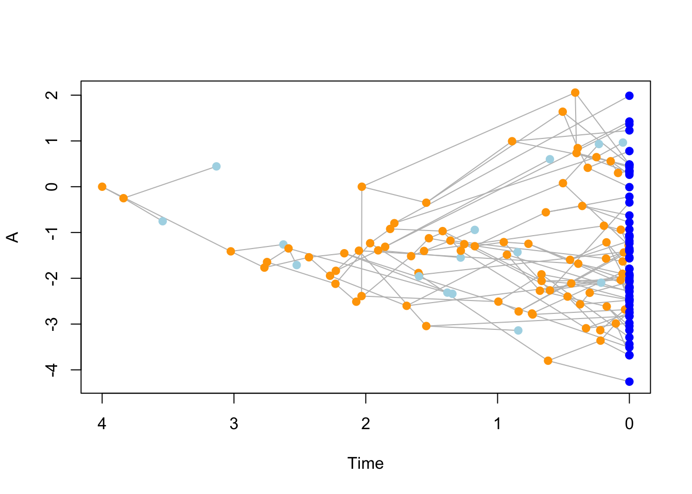
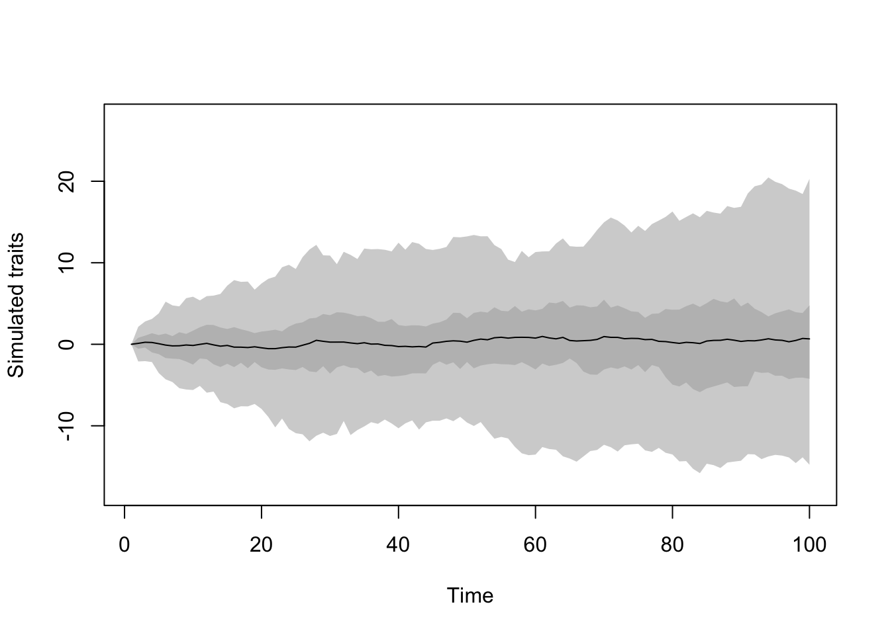
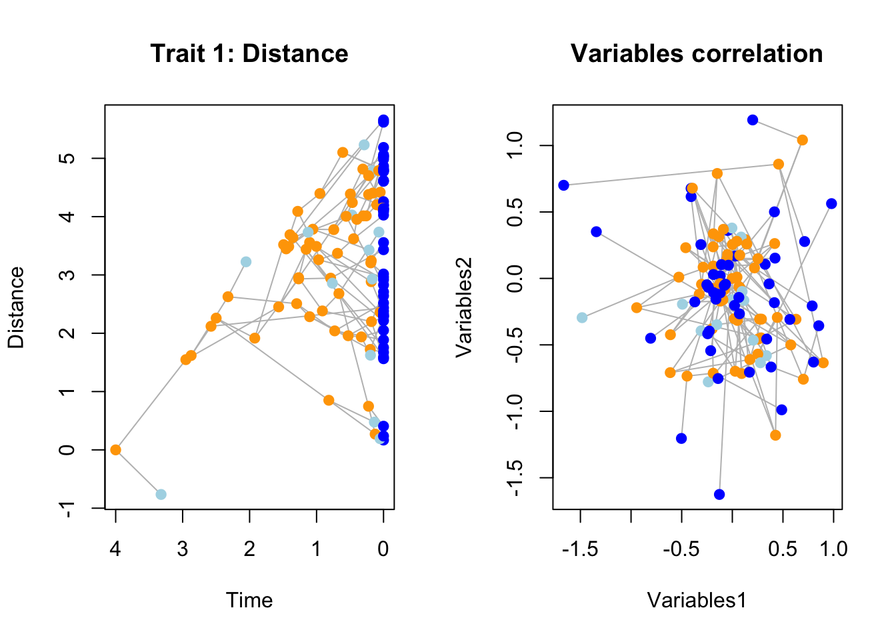

6 Thorough example
Here we are going to look at an example on how to simulate complex evolutionary histories with dads.
Let say we want to simulate the following story:
- A lineage evolves in a normal birth-death fashion (with extinction) from a single origin and with two traits called:
- “Distance”: the physical distance between species in an arbitrary 1D space (evolving in a Brownian motion).
- “Variable”: a 2D uncorrelated Ornstein-Uhlenbeck trait that corresponds to some traits the lineages have. During the whole process, lineages that are more further away from the other species in terms of distance have a higher change of speciating (proportional to that distance).
Three events then happen during the evolutionary history of this lineage:
- “Correlation event”: after reaching a certain number of taxa an event happens making the “Variables” trait dimensions become correlated.
- “Selective extinction event”: after reaching a certain point in time, lineages with their “Variables” values that are negative go extinct
- “Founding event”: after reaching a value for the “Distance” trait, a founding event happens with a new birth-death process with no extinction and where the “Variable” is now a 2D correlated Brownian Motion.
- “Mass extinction event”: after reaching a certain number of taxa in the “Founding event”, 80% of taxa go extinct randomly.
We are going to run each step one by one in a cumulative manner to see how they pile up:
6.1 Step 1:
6.1.1 The birth death parameters
First let’s set the overall birth death parameters (a speciation of 1.2 and an extinction of 0.3):
## The birth death parameters
bd_params <- list(speciation = 1.2, extinction = 0.3)
## The stopping rule
stop_rule <- list(max.time = 4)And let’s quickly test if the simulation works by running a birth death tree without traits and anything:
set.seed(0) # 123 also works
## Running a birth death tree
results <- dads(bd.params = bd_params,
stop.rule = stop_rule)
## And displaying the results
plot(results)
axisPhylo()
6.1.2 The traits
Then let’s create the traits:
## The trait object
two_traits <- make.traits(process = c(BM.process, OU.process), n = c(1, 2),
trait.names = c("Distance", "Variables"))
Note that specifying the correlation matrix is not necessary here per se (since no correlation is the default) but we will modify it through an event later on so it’s good practice to have it properly stated before hand (to avoid any confusion).
We can then run the tree with the traits:
set.seed(0)
## Running a birth death tree
results <- dads(bd.params = bd_params,
stop.rule = stop_rule,
traits = two_traits)
## And displaying the results
par(mfrow = c(1,2))
plot(results, trait = 1, main = "Trait 1: Distance")
plot(results, trait = c(2,3), main = "Variables correlation")
6.1.3 The modifiers
## Speciation event is more likely if lineage's ancestor is further away from the mean trait value
distance.modify <- function(x, trait.values, lineage) return(x + x * abs(parent.traits(trait.values, lineage)[1] - mean(trait.values[,1])))
## Make a distance modifier
distance.speciation <- make.modifiers(speciation = speciation,
modify = distance.modify)set.seed(42)
## Running a birth death tree
results <- dads(bd.params = bd_params,
stop.rule = stop_rule,
traits = two_traits,
modifiers = distance.speciation)
## And displaying the results
par(mfrow = c(1,2))
plot(results, trait = 1, main = "Trait 1: Distance")
plot(results, trait = c(2,3), main = "Variables correlation")
6.2 Step 2:
- “Correlation event”: after reaching a certain number of taxa an event happens making the “Variable” trait dimensions become correlated.
## The correlation change event
events_list <- make.events(event.name = "Correlation",
target = "traits",
condition = taxa.condition(30),
modification = update.traits(
process.args = list(Sigma = matrix(c(0.7, 0, 0, 0.7), 2, 2)),
trait.names = "Variables"))set.seed(8)
## Running a birth death tree
results <- dads(bd.params = bd_params,
stop.rule = stop_rule,
traits = two_traits,
modifiers = distance.speciation,
events = events_list)
## And displaying the results
par(mfrow = c(1,2))
plot(results, trait = 1, main = "Trait 1: Distance")
plot(results, trait = c(2,3), main = "Variables correlation")
6.3 Step 3:
- “Selective extinction event”: after reaching a certain point in time, lineages with their “Variables” values that are negative go extinct